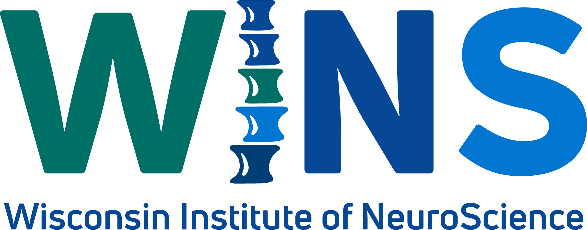

| Home | Registration | Program | Directions | Flyer |
Save the Date, October 9th 2026 for the annual Wisconsin Pain Research Day at the Medical College of Wisconsin for a dynamic one-day conference dedicated to advancing pain research, presented by the Wisconsin Institute of NeuroScience. This event brings together experts from basic science, translational research, and clinical studies to explore the latest breakthroughs in understanding and treating pain. Featuring a distinguished plenary speaker, Geoffroy Laumet, PhD, as well as opportunities for trainees to present their research, this conference fosters collaboration, innovation, and meaningful discussions among scientists, clinicians, and emerging scholars. Whether you're an established investigator or an early-career researcher, this is a unique opportunity to connect with peers and contribute to the future of pain science.
The 2026 Wisconsin Pain Research Day organizing committee:
Cheryl Stucky - Marvin Wagner Endowed Professor, Director of the WINS Pain Pillar, and Director, Pain Division, Neuroscience Research Center
Aaron Mickle - Associate Professor in the Department of Physiology, Neurosurgery and Urology
Tayler Sheahan - Assistant Professor in the Department of Cell Biology, Neurobiology and Anatomy
Jonathan Enders - Postdoctoral Researcher in the Department of Cell Biology, Neurobiology and Anatomy
Gabbie Robilotto - Graduate Student in the Department of Physiology
Bradey Stuart - MSTP Student in the Department of Cell Biology, Neurobiology and Anatomy
Hannah Anderson - Graduate Student in the Department of Physiology
|  |
|